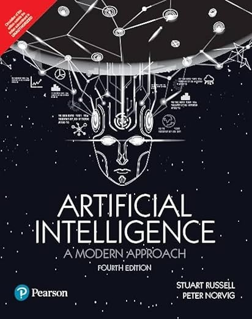
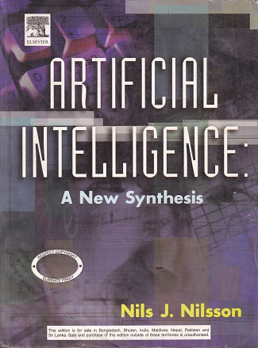
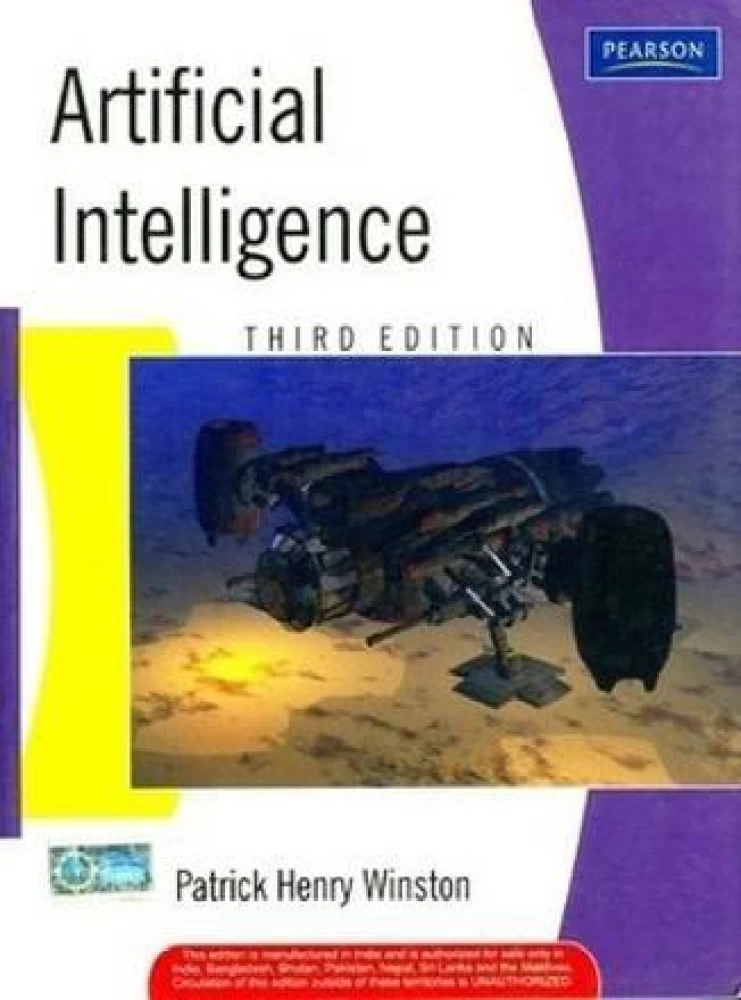
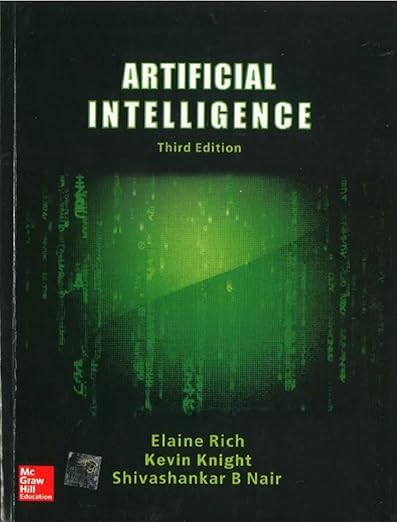

back to main page
Course details
| Course Name |
Course Code |
Credits |
Semester |
Year |
| Artificial Intelligence |
MC4112 |
3 |
Spring |
2024 |
About:
Artificial Intelligence (AI) has been gaining a lot of attention in the modern world. This course gives a basic overview of Artificial Intelligence (AI) and key ideas and techniques underlying the design of intelligent computer systems.
Topics include AI methodology and fundamentals, intelligent agents, searching techniques, game playing, constraint satisfaction problems, logic, knolwedge base reasoning, machine learning, Artifical Neural Network, Genetic Algorithms,
planning and decision making.
Contents:
This course will cover fundamentals of Artificial Intelligence.
- Searching: informed and uninformed search, heuristic search, A*, adversarial search.
- Uninformed search techniques: breadth-first search, depth-first search, Depth Limited Search (DLS), Iterative Deepening Depth First Search(IDDFS), Bidirectional Search
- Informed search techniques: Best-First Search, Heuristic Functions, A* search and Iterative Improvement
Algorithms
- Constraint Satisfaction Problems: Constraint Satisfaction Problems (CSPs) ; Backtracking search for CSPs; Local search for CSPs.
- Adversarial Search: Games, Optimal Decisions in Games, Alpha-Beta pruning.
- Agents that Reason Logically: A Knowledge-based Agent, The Wumpus World Environment, Representation, Reasoning and Logic, Propositional Logic: A very simple logic, an agent for the Wumpus
World.
- Logic and knowledge: propositional, first-order, reasoning,and knowledge representation.
- Machine learning: supervised, unsupervised, reinforcement, and Artificial Neural Networks
- Neural Network: Neural Network Perceptions. Multi-layered feed forward Networks, Back Propagation algorithm, Applications of Neural Networks.
- Evolutionary techniques: Genetic Algorithms, operators in genetic algorithms
- Planning and decision making
Objective:
The objective of this course is to present an overview of the principles and practices of AI to address such complex real-world problems.
-
Understand the foundation of Artificial Intelligence and applications.
-
Understand the agents and environments and role of agent and environment in Artificial Intelligence.
-
Learn and implement various search strategies including uninformed search, informed search, and adversarial search.
-
Learn different methods of representing knowledge in AI systems such as propositional and predicate logic and constraint satisfaction problems.
-
To develop a basic understanding of problem solving, knowledge representation, reasoning and learning methods of AI.
-
Explain the basic knowledge representation, problem solving, and learning methods of Artificial Intelligence.
Assessment:
-
Class test(s):10%
-
Assignment(s): 20%
-
Mid-term written examination : 20%
-
End-term written examination: 50%
Prerequisites:
To undertake this course, a background in basic mathematics including:
- Programming skills in a high-level language
-
Basic probability and statistics
-
Linear algebra
-
Calculus
-
Data structure and algorithms
Reference books:
|

|
Book title: Artificial Intelligence: A Modern Approach, 4th edition
Author(s): Peter Norvig, and Stuart J. Russell
Publisher: Pearson Education, 2018.
|
|

|
Book title: Artificial Intelligence: A New Synthesis, 3rd Edition
Author(s): Nils J. Nilsson
Publisher: Morgan Kaufmann, 1997.
|
|

|
Book title: Artificial Intelligence, 3rd edition
Author(s): Patrick Henry Winston
Publisher: Pearson Education, 2011.
|
|

|
Book title: Artificial Intelligence, 3rd edition
Author(s): Kevin Knight, Elaine Rich, and Shivashankar B. Nair
Publisher: McGraw Hill Education, 2017.
|
copyright@ajitkumarsahoo.2024